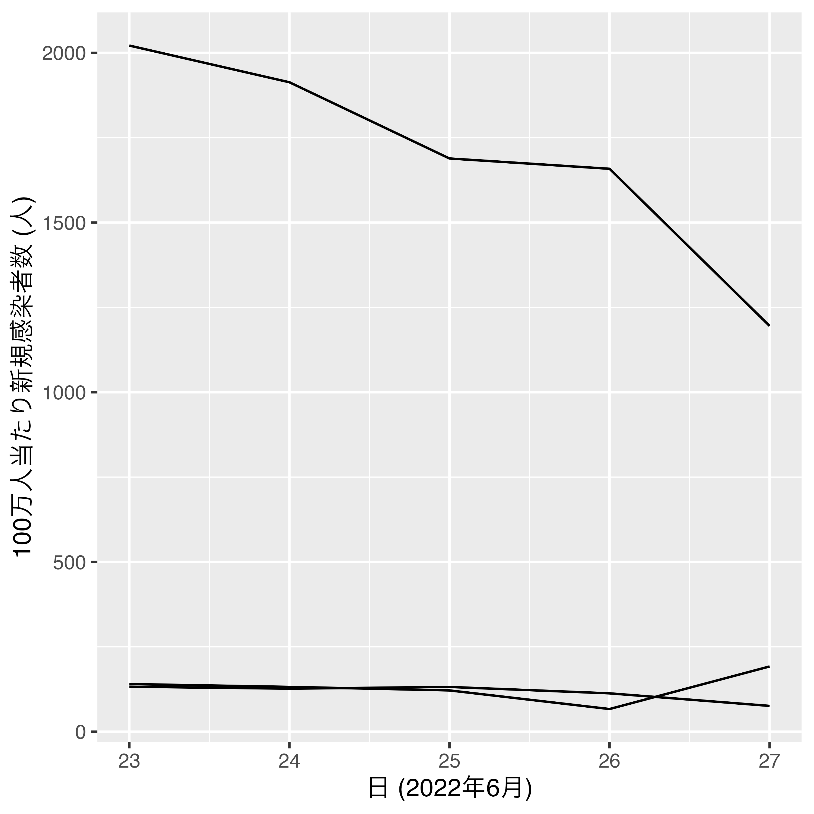
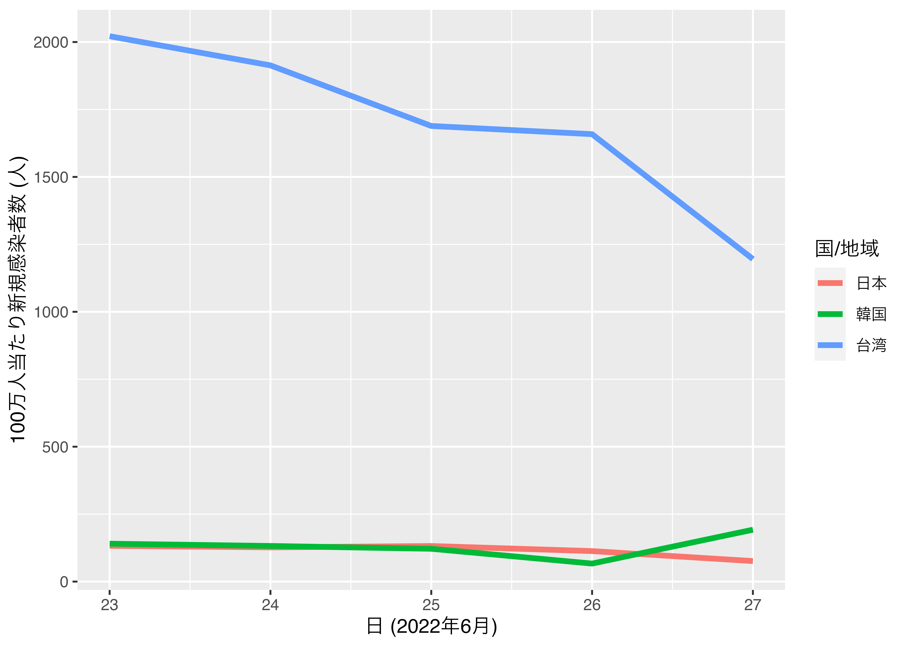
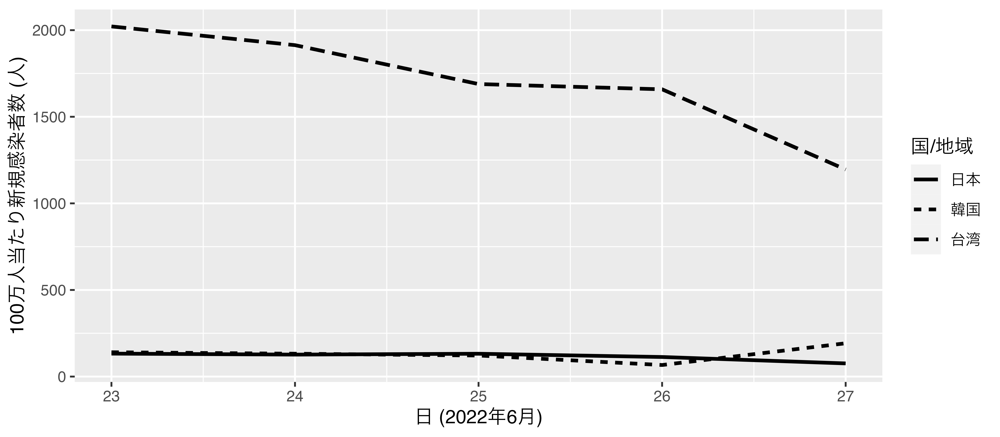
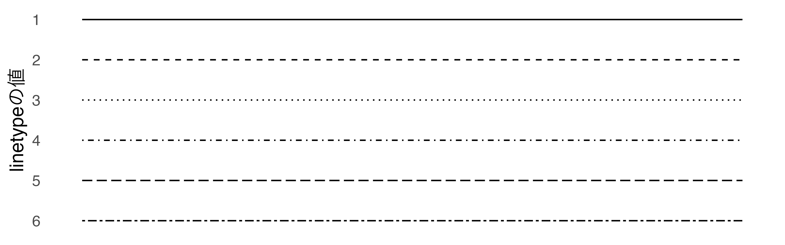
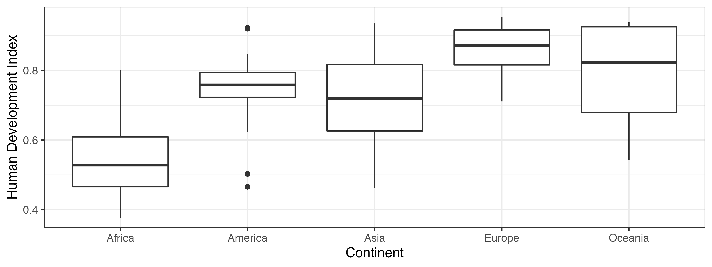
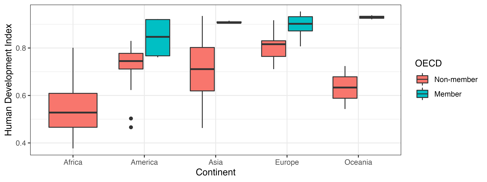

第14回講義資料
可視化 (3)
スライド
散布図
散布図の作成
散布図の必須要素
散布図を作成する際に必要な最低限の情報
データにフリーダムハウス・スコアと人間開発指数の列が必要
x: 点の横軸上の位置- フリーダムハウス・スコア
y: 点の縦軸上の位置- 人間開発指数
- 原因と結果の関係（因果関係）が考えられる2変数の場合、原因を横軸、結果を縦軸にする。
データの読み込み
第9回実習用データ（Micro09.csv）を使用
library(tidyverse)
df <- read_csv("Data/Micro08.csv")散布図の作成 (1)
幾何オブジェクトはgeom_point()を使用
df %>%
ggplot() +
geom_point(aes(x = FH_Total, y = HDI_2018))ラベル修正 / 必要に応じてカスタマイズ
df %>%
ggplot() +
geom_point(aes(x = FH_Total, y = HDI_2018), color = "royalblue") +
labs(x = "フリーダムハウス・スコア", y = "人間開発指数 (2018)")次元の追加
散布図における次元の追加
- それぞれの点は各国の (1) フリーダムハウス・スコアと (2) 人間開発指数の情報を持つ
- = 2次元
- 更に情報を持たせるためには…
- 色分け:
color - 大きさ:
size - 形:
shape - 透明度(非推奨):
alpha - ファセット分割
- 色分け:
- 5次元以上のグラフも可能だが、3次元までを推奨
- 一つのグラフの情報が多すぎると読みにくくなる
- 4次元以上になりそうならファセット分割で対応
- 3次元の場合、色分け（
color）を推奨するが、白黒の図を作成する場合は形（shape）を使う。
5次元散布図の例
各点はフリーダムハウス・スコア、人間開発指数、人口（対数変換）、大陸、OECD加盟有無の情報を持つ
df %>%
mutate(OECD = if_else(OECD == 1, "Member", "Non-member")) %>%
ggplot() +
geom_point(aes(x = FH_Total, y = HDI_2018, color = Continent,
size = Population, shape = OECD), alpha = 0.65) +
scale_size_continuous(trans = "log10") +
labs(x = "Freedom House Score", y = "Human Development Index (2018)",
size = "Population (log)") +
theme_gray(base_family = "HiraKakuProN-W3")色分け
aes()の内部にcolor = 色分けする変数を指定
HighIncome変数を作成し、PPP_per_capitaが2万以上なら"高"、未満なら"低"HighIncome値に応じて点の色分けを行う（color = HighIncome）- 点の大きさは2とする（全体に適用させるため、
aes()の外側に指定） labs()内で凡例タイトルを修正; 凡例を下側へ移動
scatter_plot1 <- df %>%
drop_na(FH_Total, HDI_2018, PPP_per_capita) %>%
mutate(HighIncome = if_else(PPP_per_capita >= 20000, "高", "低")) %>%
ggplot() +
geom_point(aes(x = FH_Total, y = HDI_2018, color = HighIncome),
size = 2) +
labs(x = "フリーダムハウス・スコア", y = "人間開発指数 (2018)",
color = "一人当たりPPP GDP") +
theme(legend.position = "bottom")
scatter_plot1色のカスタマイズ
colorにマッピングされている変数（HighIncome）が離散変数
scale_color_manual()を使用- 引数:
values = c("値1" = "色1", "値2" = "色2", ...)
scatter_plot1 +
scale_color_manual(values = c("低" = "orange", "高" = "royalblue"))
{ggplot2}で使える色
- 文字列で指定
"red"、"blue"、"royalblue"など（全657種類）- Googleなどで「ggplot2 color」で検索（例）
- RGBカラー（HEXコード）で指定
- 細かく調整可能（16,777,216種類の色）
- 例)
"#FF0000": 赤、"#4169E1": ロイヤルブルー
色の見本 (一部)
shapeの見本
shapeで指定（デフォルトはshape = 19）
- 黒の部分は
color、グレーの部分はfill（またはbg）で調整- 21と22の場合、枠線は
color、内側の色塗りはfill
- 21と22の場合、枠線は
- 0〜14の場合、中身が透明
折れ線グラフ
折れ線グラフの作成
折れ線グラフの必須要素
折れ線グラフを作成する際に必要な最低限の情報
データに日と新規感染者数の列が必要
x: 線の傾きが変化し得る点の横軸上の位置- 日
y: 線の傾きが変化し得る点の縦軸上の位置- 100万人当たり新規感染者数
- 散布図とほぼ同じ
- ただし、線が2つ以上の場合
groupsが必要- 点をグループ化しないと、どの点を繋げば良いかが分からないため

データの用意
授業サポートページから実習用データ（Micro14.csv）をダウンロード
- 整然データとして加工済み
Day: 日付（2021年6月）;NewCases: 100万人当りCOVID-19新規感染者数
COVID_df <- read_csv("Data/Micro14.csv")
COVID_df# A tibble: 15 × 3
Country Day NewCases
<chr> <dbl> <dbl>
1 Japan 16 13.6
2 Japan 17 12.2
3 Japan 18 12.9
4 Japan 19 11.9
5 Japan 20 10.4
6 Korea 16 10.5
7 Korea 17 9.89
8 Korea 18 9.40
9 Korea 19 8.37
10 Korea 20 6.96
11 Taiwan 16 7.05
12 Taiwan 17 7.35
13 Taiwan 18 7.85
14 Taiwan 19 5.25
15 Taiwan 20 4.58線が一本の場合
geom_line()幾何オブジェクトを使用
x: 点の傾きが変化し得る点の横軸上の位置y: 点の傾きが変化し得る点の縦軸上の位置- 日本の行のみを抽出し、横軸を日、縦軸を100万人当たり新規感染者数とした折れ線グラフを作成
COVID_df %>%
filter(Country == "Japan") %>%
ggplot() +
geom_line(aes(x = Day, y = NewCases)) +
labs(x = "日 (2021年6月)", y = "100万人当たり新規感染者数 (人)")線が二本以上の場合
groupに線のグループ変数を指定
- 国別の折れ線グラフの場合、国変数を指定
COVID_df <- COVID_df %>%
mutate(Country = case_when(Country == "Japan" ~ "日本",
Country == "Korea" ~ "韓国",
TRUE ~ "台湾"),
Country = factor(Country, levels = c("日本", "韓国", "台湾")))
COVID_df %>%
ggplot() +
geom_line(aes(x = Day, y = NewCases, group = Country)) +
labs(x = "日 (2021年6月)", y = "100万人当たり新規感染者数 (人)")
線が二本以上の場合
colorで色分け: 国別の折れ線グラフの場合、国変数を指定
- 線をやや太め（1.5）にする
size: 全線に適用させるためにaes()の外側に- 線が細すぎると色が区別しにくい
COVID_df %>%
ggplot() +
geom_line(aes(x = Day, y = NewCases, group = Country, color = Country),
size = 1.5) +
labs(x = "日 (2021年6月)", y = "100万人当たり新規感染者数 (人)",
color = "国")
次元の追加
多くの折れ線グラフは既に3次元
- 日（
x）、新規感染者数（y）、国（grouporcolor） - これ以上次元を増やすならファセット分割で対応するのが賢明
- ファセット分割せずに次元を増やすなら…
size: 線の太さlinetype: 線のタイプ（1 = 実線、2 = 破線、4 = 点線、…）- 白黒図の場合、
colorでなく、linetype
- 白黒図の場合、
alpha: 透明度
線のタイプ
- 主に白黒図で使用
COVID_df %>%
ggplot() +
geom_line(aes(x = Day, y = NewCases, group = Country,
linetype = Country), size = 1) +
labs(x = "日 (2021年6月)", y = "100万人当たり新規感染者数 (人)",
linetype = "国") 
自分で線のタイプを指定したい場合はscale_linetype_manual()レイヤーを追加し、values引数にそれぞれの線のタイプを指定する。
データ %>%
ggplot() +
... +
scale_linetype_manual(values = c("日本" = 1, "韓国" = 2, "台湾" = 4))linetypeの見本
種類が多くなると区別しにくいため、最大3つ程度
- 1, (2 or 3), (4 or 10）
- 2と3、または4と10ど同時に使うと、区別することが難しい。
- 一つ面に登場する線は3〜4本程度まで（色分けも同様）

折れ線グラフ + 散布図
geom_point()とgeom_line()を重ねる
- 後（先）に書いたレイヤーが前面（背面）に
- 傾きの変化が激しくない場合に有効
- 点は線より大きめに
- 白黒印刷に備え、点の形分けも可能
COVID_df %>%
ggplot(aes(x = Day, y = NewCases, color = Country)) +
geom_point(aes(shape = Country), size = 3) +
geom_line(aes(group = Country), size = 1) +
labs(x = "日 (2021年6月)", y = "100万人当たり新規感染者数 (人)",
color = "国", shape = "国") +
theme_bw()箱ひげ図
箱ひげ図の作成
変数の分布を示す方法の一つ
- 最小値、最大値
- ひげの両端
- 第一四分位数、第三四分位数
- 箱の上限と下限
- 中央値（第二四分位数）
- 箱内の線
- 外れ値がある場合、点
変数の分布をグループごとに見る時に有効
人間開発指数 (HDI_2018) の箱ひげ図
x、またはyに分布を確認した変数をマッピングするxにマッピングするか、yにするかによって箱の向きが変わる
df %>%
ggplot() +
geom_boxplot(aes(y = HDI_2018)) +
labs(x = "", y = "人間開発指数 (2018)") +
theme_bw()次元の追加
yにしかマッピングされているため、まだ次元追加の余地が残っている
xにマッピング（大陸ごとのHDI_2018の箱ひげ図）- 更に次元を追加したい場合は、ファセット分割
df %>%
ggplot() +
geom_boxplot(aes(y = HDI_2018, x = Continent)) +
labs(x = "大陸", y = "人間開発指数 (2018)") +
theme_bw()
カスタマイズ（色）
箱の色を変える
- すべての色を変える場合、
aes()の外側にfill - 箱ごとにの色を変える場合、
aes()の内側にfill
df %>%
ggplot() +
geom_boxplot(aes(y = HDI_2018, x = Continent), fill = "cornsilk") +
labs(x = "大陸", y = "人間開発指数 (2018)") +
theme_bw()
df %>%
ggplot() +
geom_boxplot(aes(y = HDI_2018, x = Continent, fill = Continent)) +
labs(x = "大陸", y = "人間開発指数 (2018)") +
theme_bw() +
theme(legend.position = "none")
カスタマイズ（箱の幅）
aes()の外側にwidthを指定
df %>%
ggplot() +
geom_boxplot(aes(y = HDI_2018, x = Continent), width = 0.5) +
labs(x = "大陸", y = "人間開発指数 (2018)") +
theme_bw() +
theme(legend.position = "none")
横軸と縦軸の交換
箱が多すぎて読みにくい場合、xとyを交換も良い
df %>%
ggplot() +
geom_boxplot(aes(x = HDI_2018, y = Continent)) +
labs(x = "人間開発指数 (2018)", y = "大陸") +
theme_bw(base_size = 14) +
theme(legend.position = "none")
もし、縦軸の順番を反転するなら、scale_y_discrete(limits = rev)レイヤーを追加する。
df %>%
ggplot() +
geom_boxplot(aes(x = HDI_2018, y = Continent)) +
labs(x = "人間開発指数 (2018)", y = "大陸") +
scale_y_discrete(limits = rev) +
theme_bw(base_size = 14) +
theme(legend.position = "none")